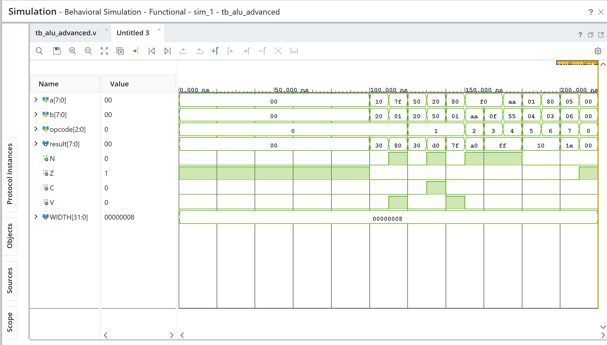

subgraph ALU_Block
ALU
end</div>``
3. RTL Design
The design consists of an 8-bit ALU that supports operations such as ADD, SUB, AND, OR, XOR, NOT, and shifts. - 8-bit ALU: The core logic performs the selected operation based on a 4-bit Opcode. - NZCV Flags: - N (Negative): Set if the MSB of the result is 1. - Z (Zero): Set if the result is exactly zero. - C (Carry): Set if an arithmetic operation generates a carry out from the MSB. - V (Overflow): Set if an arithmetic operation results in a signed overflow. - PYNQ-Z2 Auto-Test Wrapper: A wrapper module designed for the PYNQ-Z2 board to facilitate automated testing by mapping the ALU I/O to the board's switches, buttons, and LEDs for hardware validation.
4. Simulation Results

5. Hardware Implementation
 - Photo 1: PYNQ-Z2 board showing ALU inputs via switches.
- Photo 2: PYNQ-Z2 board showing output result and flags on LEDs.
- Photo 1: PYNQ-Z2 board showing ALU inputs via switches.
- Photo 2: PYNQ-Z2 board showing output result and flags on LEDs.
6. Applications
- Central Processing Unit (CPU) ALUs
- Digital Signal Processing (DSP) applications
- Embedded microcontrollers
7. Conclusion
An 8-bit Advanced ALU with accurate NZCV flag generation was successfully designed and tested. The implementation on the PYNQ-Z2 board verifies the hardware functionality, making it a reliable building block for more complex computational architectures.